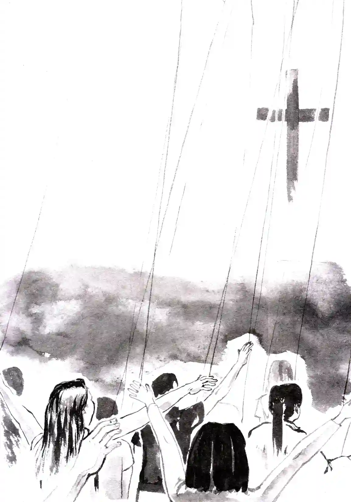

第4章

星期天早晨，徐心昀一如既往的與父母前往教會。他們穿過熟悉的街道，逐漸走進週末的晨光中。
主日對徐心昀來說並不陌生，這個例行公事早已根植於她的生活之中，成為一種無法迴避的必然。從她的有意識以來一直到現在，每個週日早上都是「已有行程安排」，雖然不曾寫在行事曆上，但在朋友邀約時，都會下意識地避開這個時段。
然而回想起不久前才參加過的「地下城」的主日，徐心昀突然對接下來的行程感到些微的抗拒。不知道教會裡的人是不是也一樣的瘋狂，一樣在面對困境時，仍然不會退縮害怕。
但無論內心是如何想的，都無法改變徐心昀「去教會」這件既定的事實。她踏著機械式腳步，跟隨父母踏入那間她閉著眼睛都不會找不到的教會。
「平安！」一位招待同工微笑著將徐心昀的思緒拉回現實。
「平安。」徐心昀報以微笑並接過週報，順手瀏覽著上面的資訊。然而，當她看到今天是宣教主日，所有人都要聚集到大堂時，內心頓時升起些許煩躁。沒有個別的青年崇拜，就意味著她等一下不得不坐在父母旁邊，無法自在的滑手機了。
徐心昀目光游移，企圖找到一個適當的藉口，讓自己可以獨自一人坐在後排的位子。
就在此時，一個熟悉的聲音打破了她的思緒：「心昀，早啊！等等要不要坐一起？」徐心昀轉身，發現走向她的是好友葉康然。
聽到葉康然的話，徐心昀內心頓時一喜，一個絕佳的藉口正呈現在自己面前。她立即看向父母，期待地問道：「等一下主日時，我可以跟康然坐一起嗎？」
徐媽媽友善的點頭同意，甚至還開口邀請道：「康然是自己一個人吧，要不要跟我們坐一起？」
葉康然彷彿是讀出身旁徐心昀的思緒，露出一個官方式的笑容：「好啊！不過我們再等等其他幾個青年團契的朋友們。」說著，她悄悄的向徐心昀眨了眨眼，似乎傳遞出了某種資訊。
「嗯嗯！」徐心昀也瞬間聽懂了葉康然的話外之音，回頭對她媽媽說道：「你們先進去，我們等到人後再進會堂找你們。」
看著父母走進會堂的背影，徐心昀興奮的與葉康然擊了個掌：「哈哈，謝謝你啦！不然我差點就要和父母坐在一起了。」
她們交換了一個心照不宣的眼神，彼此都心知肚明等一下她們進去後，並不會去找徐心昀的父母，而是會另外找一個不起眼的小角落。
主日崇拜開始後，徐心昀無所事事的看著臺上的主領。主領讓會眾起立或坐下的話語，彷彿形成無數條無形的絲線，操縱著每一個人的行動。徐心昀感覺自己像是一個沒有思想的木偶，枯燥的做著自己也不明白的動作。
為什麼在崇拜最開始時要念使徒信經？為什麼禱告完後所有人要一起背主導文？為什麼讀經時又要站起來？為什麼……。
有太多的為什麼是徐心昀不知道的，但反正大家也都是如此，自己也只要跟著遵行就是了。
成人和青年的主日崇拜在流程上有些微的差異，但整體來看，並沒有太大的區別。然而，今天的無聊感似乎比往常更加強烈，所有的一切都過於熟悉，完全在預料之中，沒有一絲新鮮感。她望向會堂內的人群，大家似乎都已投入在崇拜之中，連身旁的葉康然看起來也不例外。但對徐心昀來說，這些經歷過無數次的儀式，早已失去了最初的吸引力。
當今天證道的宣教士走上講台時，徐心昀終於微不可察的鬆了一口氣，知道短時間內不會再有人打擾自己了。於是她駕輕就熟的拿出手機，準備打發掉接下來枯燥的講道時間。
旁邊的葉康然卻突然輕輕拍了一下徐心昀的肩膀，小聲的興奮道：「哇，今天來的是曾經在創啟地區宣教的宣教士欸，感覺會很好玩！」
「好玩？」徐心昀疑惑的回應：「宣教士的分享，我從小到大聽過無數遍了，基本套路都會背了，有什麼好興奮的？」每次都千篇一律，說著他們如何離開安逸的生活，前往遙遠的地方，然後面對種種挑戰，最後經歷到 神，獲得心靈上的滿足。
「可這次的宣教士不太一樣哦，是創啟地區！」葉康然指著周報上的文字，解釋道：「你知道的吧，就是指那些不歡迎基督教宣教士進入的國家。宣教士在那邊傳福音可能會有生命危險，但同時他們也更能經歷到許多神蹟奇事。什麼一經禱告邪靈就離開、病就得醫治、物資多的超過所求所想等等，這些對他們來說幾乎都是家常便飯欸！」
「那又如何？又不是發生在你身上。」徐心昀不以為然的撇撇嘴：「而且你不覺得很不公平嗎，為什麼神蹟似乎只會出現在這些特定的國家？如果 神真的愛著我們每一個人，為什麼有的人就永遠無法經歷到 神？」
聽到徐心昀的連環問題，葉康然的情緒也沒有最初的激動了：「這我也不知道啦。不過，那些故事聽著還是蠻過癮的，不是嗎？」
徐心昀沒有回應葉康然的問題，反而自顧自的又說道：「你說，上帝為什麼不能像用大光照保羅那樣，也給我照一下？」
「你瘋啦！」葉康然難以置信的看著徐心昀：「你想經歷神蹟也不用自虐吧？保羅當時可是瞎了三天欸！」
徐心昀聳了聳肩：「可如果真的能經歷到 神，就算瞎上一個月我也願意。但反正我都禱告過那麼多次了，也沒見哪一次祂真的聽見，並顯現神蹟給我看。」
「是嗎？我倒覺得像現在這樣潤物細無聲也挺好的。」葉康然不置可否的回道：「不然要是哪天 神呼召我去當宣教士，你說我是拒絕呢、還是拒絕呢？或者還是拒絕呢？」
徐心昀不禁啞然失笑，剛想開口再說幾句，就見前一排的人微微側頭看了她們一眼。兩人立馬意識到自己的交談聲已經影響到其他人，便不再繼續開口說話。
徐心昀低頭看了眼手機中已自動熄滅的手機螢幕，猶豫了一下，最終還是將它收回口袋，轉而擡頭看向講臺上的宣教士。她的確從沒聽過創啟地區宣教士的見證分享。或許，會跟以往聽到的宣教士分享不一樣？
宣教士站在講台上，面帶微笑，他用堅定的語氣開始講述在穆斯林地區的經歷。在那個福音不開放的地區，傳福音不僅是挑戰，更是一種生命的危險。它永遠有一種潛在的壓力在那裡。
「那是個充滿困難和阻礙的地方，」宣教士深吸了一口氣，他的聲音響徹整個大堂，每一個字都彷彿都承載著某種不可動搖的力量：「但在那裡，我無時無刻不在經歷 神的大能。」
「還記得我抵達當地的隔天早上，就有警察來敲門。那個警察一看就不是一般的警察，身上佩帶著長槍、短槍，就好像鎮暴部隊一樣。當時的氣氛有點緊張，我不知道他們是怎麼找上我的，也不知道他們的目的是什麼。類似的情況頻繁發生，有時候我根本無法確定有沒有警察在跟蹤我，不知道會不會馬上有安全警察過來把我帶走。說不害怕是不可能的，但上帝是有恩典的，我也一直在經歷祂的話，明白『耶和華要保護你，免受一切的災害，祂要保護你的性命。你出你入，耶和華要保護你[1]』這句話是什麼意思。」
「911事件發生的時候，是我宣教的第二年，各個城市都有示威遊行。我在的市區的麥當勞，有兩個還被放了炸彈。有的暴徒甚至會趁亂嘗試強闖民宅，人們的生命危在旦夕，我更是做好了隨時殉道的心理準備。然而，就在那個時候，我很清楚的聽到主對我說：『我將這些事告訴你們，是要叫你們在我裡面有平安。在世上，你們有苦難；但你們可以放心，我已經勝了世界。[2]』」
「也是在那個時候，我更加堅定了在當地宣教的決心。他們都是需要福音的未得之民，因為人心的貪婪和腐敗，讓這塊土地陷入了黑暗的深淵。這是 神呼召我的地方，我看見了需要。」
「在整個宣教的過程中，我覺得最大的挑戰是孤獨感。我很常想念那個讓我講起來、聽起來都毫不費力的語言。身處在那樣的大環境中，有些話是不可能跟身旁的人說的。放棄的念頭可能會在每一個只有寂靜陪伴的夜晚萌芽。但孤獨，卻又不等於不孤單。因為 神應許祂與我們同在，那是一段與 神同行的深刻旅程。就如同耶穌所說的：『我就常與你們同在，直到世界的末了。[3]』這是我成爲宣教士之後，用生命去體驗這句話的真實，上帝是真的會與我同在。」[4]
徐心昀聽著宣教士娓娓道來他在穆斯林地區十幾年的宣教經歷，感覺與以前聽過的宣教士分享很像，卻又有點不一樣。
宣教士在創啟地區的艱辛徐心昀早有所聞，但這份困難卻超乎了她的想像。她忽然想起在地下城時遇到的人，他們所面臨到的困境竟有著驚人的相似。然而在如此艱難的處境中，卻總是還會有一群人堅定不移的傳揚福音。
徐心昀突然感到有些困惑，到底是什麼樣的動機和推力，使得他們願意放棄舒適圈，甚至面對生命的危險去傳揚福音呢？
如果說初代教會的使徒是因為堅信著耶穌就快來了，那已經被耶穌鴿了兩千多年的人，還會傻傻的相信祂就快來了嗎？難道 神真的有如此魔力，能讓那些經歷過祂的人，就算知道耶穌不會馬上再來，也願意為祂獻上一切？
「想什麼呢，這麼認真？」趁著宣教士從講臺上下來的時間，葉康然輕撞了一下徐心昀的肩膀，問道：「怎麼樣，我就說創啟地區宣教士的故事，會很精彩吧！」
徐心昀不經意的，就把內心的疑惑說了出來：「你說為什麼總會有人想去那麼危險的地方宣教？」
「不知道欸。」葉康然搖了搖頭：「但總要有人去吧，不然福音怎麼傳遍地極？」但這個答案，顯然並未讓徐心昀的困惑消散。
隨著主領再度走上臺，開始帶領唱回應詩歌，兩人的交談也戛然而止。
主日結束後，徐心昀找到父母準備回家。當他們經過招待桌時，徐媽媽叫住了繼續往前走的徐心昀：「小昀，你也拿一張邀請卡吧！」
徐心昀茫然的回頭，一時之間沒有理解她媽媽的意思。
看著女兒困惑的眼神，徐媽媽解釋道：「剛剛主領上臺報告時不是有提到嗎？下周日晚上的烤肉活動，教會有準備邀請小卡，讓大家帶回去邀請身邊的朋友一起來參加。」
徐心昀恍然道：「噢噢，你說這個啊！」
「唉，真是的！」徐媽媽嘆了口氣：「就不應該讓你跟康然坐一起，一定都在聊天，沒有好好聽講道。」
徐心昀下意識的辯解道：「我才沒有呢！」她在主領報告教會消息時，的確沒有跟葉康然聊天，但也沒有特別專注於報告的內容。臺上報告的大多是與她無關的消息，如果是有關係的話，輔導還會在特別提醒。
徐媽媽也沒再多說，拿了一張邀請小卡就塞到徐心昀手中：「我幫你想好了，就邀請劉萱樂來烤肉活動吧！」
徐心昀有些不情願：「蛤，不要，會很尷尬欸！」
徐媽媽拍拍她的肩：「沒事，就像平時邀她來我們家一樣，只是這一次是來教會而已。」說著，也不給徐心昀將小卡放回招待桌的機會，就拉著她離開了。
註解：
[1] 詩篇121:7-8
[2] 約翰福音16:33
[3] 馬太福音28:20
[4] 參考 張郁暄碩士論文《創啟地區華人單身女宣教士 宣教之心路歷程與孤獨感經驗》